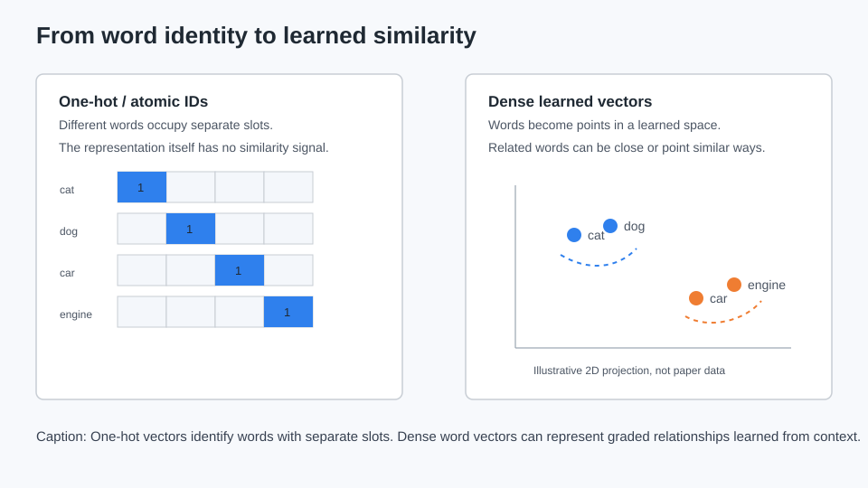
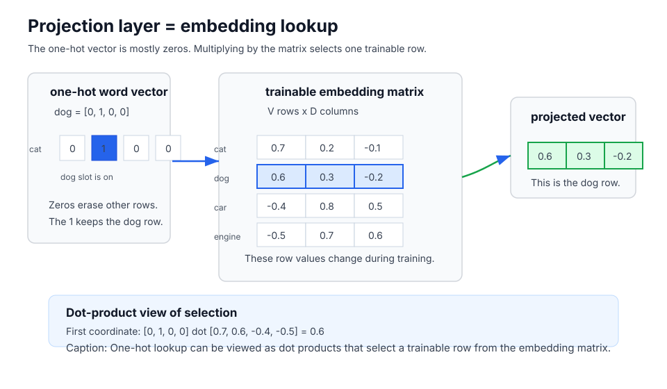
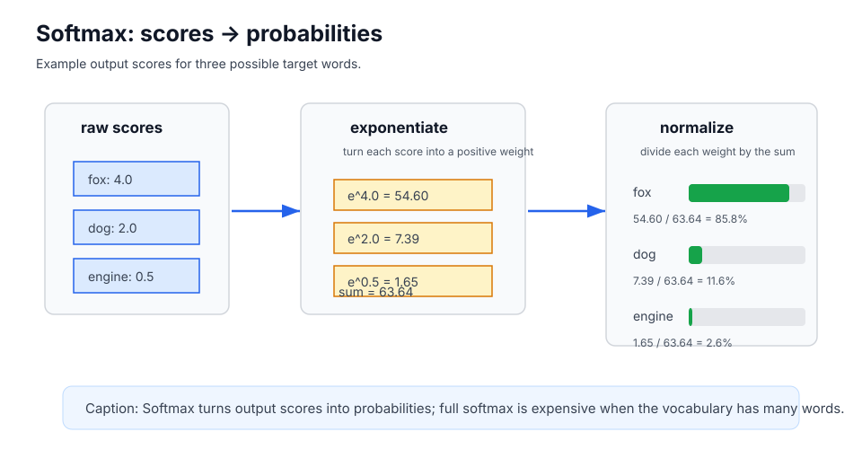
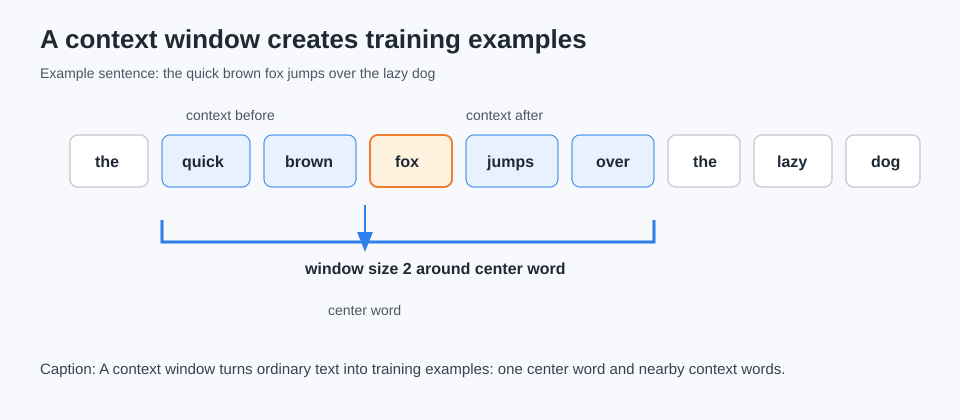
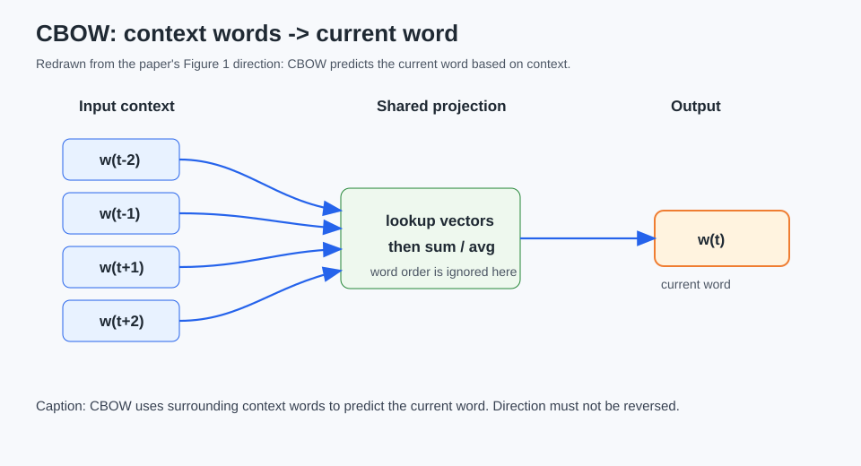
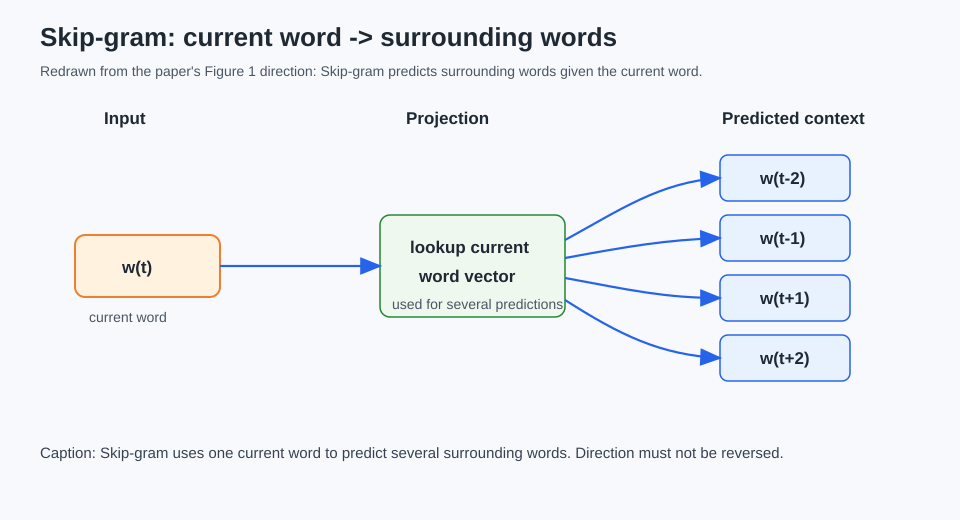
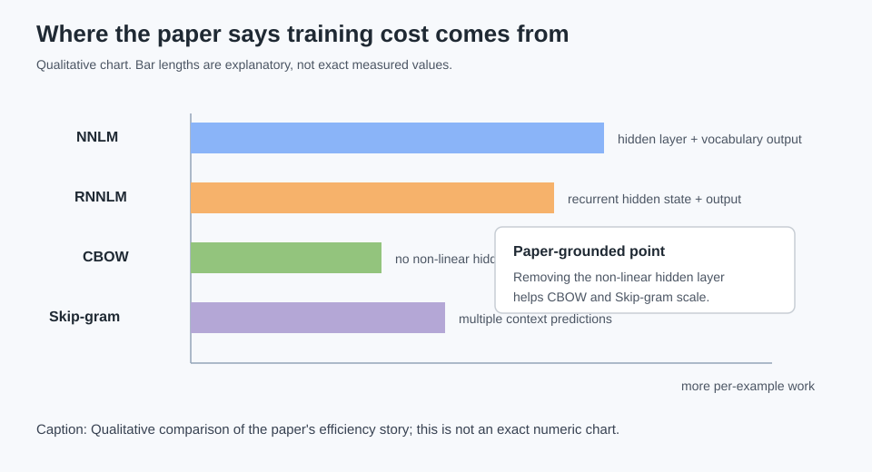
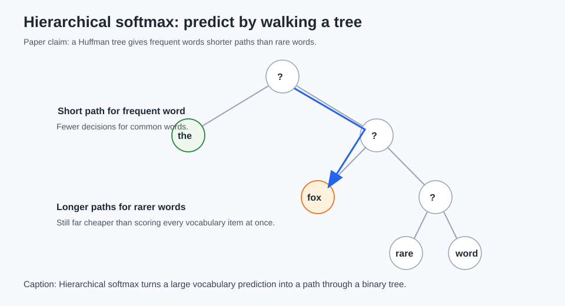
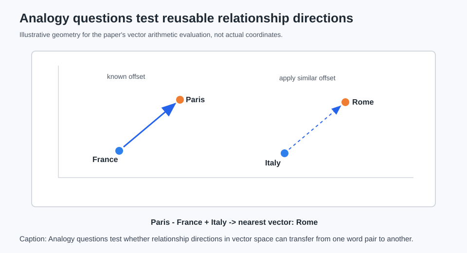
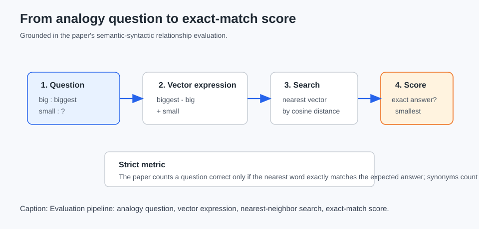

Word2Vec is often introduced with the famous analogy:
Paris - France + Italy -> RomeThis is part of a paper-reading series where we take foundational ML papers and rebuild the ideas from first principles. The goal is not just to remember the headline result, but to understand what problem the paper solved, what machinery it used, and where its claims stop.
Paper: Tomas Mikolov, Kai Chen, Greg Corrado, and Jeffrey Dean, "Efficient Estimation of Word Representations in Vector Space" (2013).
That example is memorable, but it is not the best place to start.
The real starting point is much more basic: neural networks operate on numbers, not raw words. Before a model can learn anything from a sentence, the words have to become numeric inputs. The Word2Vec paper is about learning a particularly useful kind of numeric representation: dense word vectors that can be trained cheaply on very large text corpora.
This post is a paper walkthrough of "Efficient Estimation of Word Representations in Vector Space" by Tomas Mikolov, Kai Chen, Greg Corrado, and Jeffrey Dean. It is beginner-friendly, but it is still a deep dive: we will build the first-principles bridge from word IDs to trainable vectors, then walk through the paper's older model comparisons, CBOW, Skip-gram, computational complexity, hierarchical softmax, analogy evaluation, results, and limitations.
The Problem: Words Are Not Numbers
A neural network cannot directly consume the string "cat". It needs numbers.
The usual first step is to build a vocabulary: a fixed list of words the model knows about. Each word gets an ID.
| Word | Vocabulary ID |
|---|---|
| cat | 0 |
| dog | 1 |
| car | 2 |
| engine | 3 |
This solves one problem: the model can now refer to words consistently. cat is always ID 0, dog is always ID 1, and so on.
But IDs alone are not enough. The number 0 is not "closer in meaning" to 1 than to 3. It is just a label.
One-Hot Vectors: Identity Without Similarity
A common way to turn a word ID into a vector is one-hot encoding.
If the vocabulary has V words, a one-hot vector has V dimensions. Every slot is 0 except the slot for the current word.
For our tiny vocabulary:
| Word | One-hot vector |
|---|---|
| cat | [1, 0, 0, 0] |
| dog | [0, 1, 0, 0] |
| car | [0, 0, 1, 0] |
| engine | [0, 0, 0, 1] |
One-hot vectors solve two practical problems:
- every word is represented as a fixed-size numeric vector
- every word has a unique identity
But they do not solve similarity. cat, dog, car, and engine are all equally separate one-hot vectors.

The Word2Vec paper starts from a related complaint: many NLP systems treated words as atomic vocabulary entries, with no built-in notion of similarity. The paper does not claim that this representation is useless. It explicitly notes that simple atomic representations have practical advantages. The issue is that they do not directly express relationships between words.
Dense Word Vectors and the Embedding Matrix
A dense word vector is a shorter learned vector, such as:
| Word | Tiny illustrative dense vector |
|---|---|
| cat | [0.7, 0.2, -0.1] |
| dog | [0.6, 0.3, -0.2] |
| car | [-0.4, 0.8, 0.5] |
| engine | [-0.5, 0.7, 0.6] |
These numbers are not hand-written definitions. They are trainable parameters.
The usual mental model is an embedding matrix:
N learned numbers per word
┌────────────────────────────┐
cat │ 0.7 0.2 -0.1 ... │
dog │ 0.6 0.3 -0.2 ... │
car │ -0.4 0.8 0.5 ... │
... │ ... ... ... ... │
└────────────────────────────┘
V rows, one row per vocabulary wordIf the vocabulary has V words and each dense vector has D dimensions, the matrix has shape V x D.
A one-hot vector selects a row from this table. For example, if dog is [0, 1, 0, 0], multiplying by the matrix picks the dog row. This can be understood through dot products: each output coordinate is the dot product between the one-hot vector and one column of the matrix. The zeros erase every row except the row whose slot is 1.

In practice, implementations usually do a direct lookup instead of literally multiplying by a mostly-zero vector. But the multiplication view is useful because it shows why this step is still a numeric neural-network operation.
This lookup step is what the paper calls a projection layer. "Projection" can sound abstract, but here it is simple: take a word ID or one-hot vector and project it into a dense vector space by retrieving its current trainable row from the matrix. The projected vector is the dense representation used by the rest of the model.
This is the first key bridge:
The word vector is not the one-hot input. The word vector is the trainable row selected by the one-hot input.
So what is being trained? At minimum:
- the input/projection word vectors, the rows of the word-vector table
- output prediction parameters, used to predict target words
- when hierarchical softmax is used, parameters associated with tree decisions
Training means: make a prediction, compare it with the correct word, and adjust these parameters so the next prediction is a little better. We do not need backpropagation math to understand the paper's main idea.
Tiny Math Tools We Need
Before we get to the paper's architectures, we need a small prerequisite ladder. None of this needs advanced math, but the words show up later.
Dot Product
A dot product multiplies matching positions in two vectors and adds the results.
For two tiny vectors:
a = [2, 1, 3]
b = [4, 5, 6]The dot product is:
a dot b = (2 x 4) + (1 x 5) + (3 x 6)
= 8 + 5 + 18
= 31That same operation does two useful jobs in this story.
First, it can select values from an embedding matrix when the left vector is one-hot:
[0, 1, 0, 0] dot [0.7, 0.6, -0.4, -0.5] = 0.6The zeros remove the cat, car, and engine values. The 1 keeps the dog value.
Second, a dot product can act like a compatibility score. If a context vector and an output-word vector point in similar directions, their dot product tends to be larger. That larger score can make the output word more likely after softmax.
Softmax
A softmax turns a list of scores into probabilities that add up to 1.
For example, if the model scores three possible words:
fox: 4.0
dog: 2.0
engine: 0.5softmax exponentiates each score, adds those positive values, and divides each value by the total:
e^4.0 = 54.60
e^2.0 = 7.39
e^0.5 = 1.65
total = 63.64
fox = 54.60 / 63.64 = 85.8%
dog = 7.39 / 63.64 = 11.6%
engine = 1.65 / 63.64 = 2.6%
The highest score gets the highest probability, but the model still assigns some probability to the others.
The expensive part is that a full softmax over a large vocabulary needs to score every possible word. If the vocabulary has one million words, that is one million output scores for one prediction.
Loss and Prediction Error
A loss is a number that says how wrong the prediction was. If the correct word is fox and the model assigns high probability to engine, the loss is high. Training nudges parameters so the correct word gets a higher score next time.
We do not need to derive gradients here. The important beginner idea is:
prediction error tells the model which vector rows and output parameters to adjust.
Cosine Similarity
Cosine similarity compares vector direction. If vectors are arrows, it asks whether two arrows point the same way.
For two vectors:
a = [1, 0]
b = [2, 0]they point in the same direction, so their cosine similarity is high, even though one arrow is longer.
This matters because the paper's analogy evaluation finds the nearest word using cosine distance.
The Paper's Goal
The paper is not trying to prove that word vectors are a brand-new concept. It explicitly places itself in a history of continuous and distributed word representations.
Its goal is more specific:
Learn high-quality word vectors from billions of words and very large vocabularies, while keeping training computationally cheap.
That is why the title says efficient estimation. The paper cares about vector quality, but it also cares about how much work the model does for each training word.
The paper's story has two halves:
- Use local word prediction tasks to learn vectors.
- Make the architecture simple enough to scale.
A Tiny Training Example
Take this sentence:
the quick brown fox jumps over the lazy dogPick the center word fox:
the quick brown [fox] jumps over the lazy dogWith a context window of 2, the nearby words are:
- before:
quick,brown - center:
fox - after:
jumps,over

This tiny window can generate prediction tasks. Depending on the architecture, the model might use the context to predict the center word, or use the center word to predict the context.
The learned vectors improve because the model repeatedly sees millions or billions of these small prediction problems.
Prior Work: Neural Language Models
Before introducing CBOW and Skip-gram, the paper reviews older neural language models. This section matters because the proposed models are designed as cheaper alternatives.
A neural network language model, or NNLM, is a neural model that predicts words. A typical language-modeling question is:
Given previous words, what word is likely next?The paper discusses two prior model families:
- a feedforward neural net language model
- a recurrent neural net language model
The paper does not need us to become experts in either model. It uses them as comparison points for computational cost.
Feedforward NNLM: Useful but Expensive
The feedforward NNLM described in the paper has four conceptual stages:
- input words, represented with
1-of-Vone-hot coding - a projection layer, meaning an embedding lookup that retrieves dense vectors
- a hidden layer
- an output layer that predicts a word from the vocabulary
Here are the symbols before the formula:
V: vocabulary size, the number of possible output wordsN: number of previous words used as input contextD: dimensionality of each word vectorH: hidden layer sizeQ: per-example training cost, the amount of work for one training example
The paper gives the feedforward NNLM cost as:
Q = N x D + N x D x H + H x VRead this as cost bookkeeping:
N x D: look up or project the context word vectorsN x D x H: compute the hidden layer from the projected contextH x V: score vocabulary outputs from the hidden layer
The paper says the H x V term can dominate before output optimizations. Even after improving the output layer, the hidden-layer computation remains expensive.
Here is a tiny numerical example. Suppose:
N = 5previous wordsD = 100dimensions per word vectorH = 500hidden unitsV = 100,000vocabulary words
Then:
N x D = 5 x 100 = 500
N x D x H = 5 x 100 x 500 = 250,000
H x V = 500 x 100,000 = 50,000,000This is why the output layer is such a bottleneck. Scoring a huge vocabulary can dominate everything else.
This is the contrast Word2Vec exploits: can we learn useful vectors without this costly non-linear hidden layer?
RNNLM: More Sequence Memory, More Cost
An RNNLM, or recurrent neural net language model, is another word-prediction model. Unlike the feedforward NNLM, it has a recurrent hidden state that carries information through time.
Beginner intuition:
- feedforward NNLM: looks at a fixed window of previous words
- RNNLM: updates a memory-like hidden state as it reads a sequence
The paper gives the RNNLM cost as:
Q = H x H + H x VHere:
H x His the recurrent hidden-state computationH x Vis the vocabulary output computation
With hierarchical softmax, the output term can be reduced, but the recurrent hidden computation is still expensive.
Numerical example:
H = 500V = 100,000
Then:
H x H = 500 x 500 = 250,000
H x V = 500 x 100,000 = 50,000,000Again, the vocabulary output is huge before optimization, and the recurrent hidden-state update is still substantial.
Again, the paper's point is not "RNNs are bad." The point is that heavier neural language models can be costly when the goal is to train word vectors from huge datasets.
The Paper's Main Architecture Move
The paper proposes simpler log-linear models. The main observation is that much of the cost in older neural language models comes from the non-linear hidden layer.
The proposed models remove that hidden layer.
This is a tradeoff. The paper says the simpler models may represent the data less precisely than heavier neural networks, but they can train on much more data. For learning word vectors, the paper argues that this tradeoff is worth exploring.
Now we can introduce the two new architectures.
CBOW: Predict the Current Word from Context
CBOW stands for Continuous Bag-of-Words.
Its direction is:
context words -> current wordExample:
the quick ___ foxThe surrounding words are clues. The missing current word is the target.
Inside CBOW:
- The model looks up vectors for the context words.
- It combines those projected vectors, roughly by averaging or summing.
- It predicts the current middle word.
- Prediction error updates the word vectors and output parameters.

The "bag-of-words" part matters. In the paper's CBOW architecture, word order in the history does not influence the projected context representation. The model also uses future words, not only previous words.
The paper reports a strong CBOW setting with four future and four history words as input, predicting the current middle word.
Before the cost formula, define the symbols:
N: number of context wordsD: vector dimensionalityV: vocabulary sizeQ: per-example cost
With hierarchical softmax, the paper gives CBOW cost as:
Q = N x D + D x log2(V)The beginner reading: combine the context vectors, then do a cheaper tree-based prediction over the vocabulary.
Numerical example:
N = 8context wordsD = 300dimensionsV = 1,000,000vocabulary wordslog2(V)is about20
Then:
N x D = 8 x 300 = 2,400
D x log2(V) = 300 x 20 = 6,000
Q ≈ 8,400That is much smaller than scoring every one of a million output words with a large hidden layer.
Skip-gram: Predict Context from the Current Word
Skip-gram reverses CBOW's direction:
current word -> surrounding context wordsIf the current word is brown, Skip-gram trains on predictions like:
brown -> quick
brown -> fox
brown -> theThe current word is the clue. Nearby words are targets.

The paper says Skip-gram predicts words within a range before and after the current word. Increasing that range can improve vector quality, but it also increases computation. More distant words are sampled less often because they are usually less related to the current word.
Define the symbols:
C: maximum context distanceD: vector dimensionalityV: vocabulary sizeQ: per-example cost
The paper gives Skip-gram cost as:
Q = C x (D + D x log2(V))The C x matters. Skip-gram may make multiple predictions around one center word, so a wider context window gives more training signal and more cost.
Numerical example with the same D = 300 and V = 1,000,000:
D + D x log2(V) = 300 + (300 x 20) = 6,300If C = 5, then:
Q = 5 x 6,300 = 31,500Skip-gram can be more expensive per center word because it predicts several context words. The tradeoff is that those extra prediction tasks can produce useful training signal.
What Is Actually Trained?
At this point, it is worth making the training loop explicit.
For CBOW:
- Read context word IDs.
- Look up their input/projection vectors.
- Combine those vectors.
- Predict the center word.
- Update parameters based on prediction error.
For Skip-gram:
- Read the current word ID.
- Look up its input/projection vector.
- Predict one or more surrounding words.
- Update parameters based on prediction error.
The trained parameters include the input/projection vectors. The prediction side also has parameters: either output word parameters for vocabulary prediction or, with hierarchical softmax, parameters attached to decisions in the tree.
After training, the word-vector table is the artifact people usually want.
Minimal Code Demo: Training Examples, Not Training
The code below does not train Word2Vec. It only shows how one sentence becomes CBOW and Skip-gram examples.
def cbow_examples(tokens, radius):
examples = []
for center_index, center_word in enumerate(tokens):
context = context_window(tokens, center_index, radius)
if context:
examples.append((tuple(context), labeled_token(tokens, center_index)))
return examples
def skipgram_examples(tokens, radius):
examples = []
for center_index, center_word in enumerate(tokens):
for context_word in context_window(tokens, center_index, radius):
examples.append((labeled_token(tokens, center_index), context_word))
return examplesExample output:
CBOW examples: context words -> current word
[quick@1, brown@2] -> the@0
[jumps@4, over@5, lazy@7, dog@8] -> the@6
Skip-gram examples: current word -> surrounding word
the@0 -> quick@1
the@6 -> lazy@7The word@index labels keep repeated words clear. The sentence contains the twice, so the@0 and the@6 are different token occurrences.
Computational Complexity: The Paper's Efficiency Spine
The paper compares architectures using computational complexity, described as the number of parameters that need to be accessed to fully train the model.
Its total training-cost formula is:
O = E x T x QDefine the symbols:
E: number of training epochs, or passes over the dataT: number of training wordsQ: architecture-specific cost per training example
This formula is the paper's efficiency spine.
If Q is high, large corpora are expensive. If Q is low, the model can afford more training words, larger vectors, or both.
For example, suppose two models train for one epoch over T = 1,000,000,000 words:
Model A: Q = 50,000 units of work
Model B: Q = 8,000 units of workIgnoring constants, the second model is doing far less work per word. That is the scaling motivation behind the paper: reduce Q enough that much larger T becomes practical.

The main comparison is:
| Architecture | Main source of cost | Role in paper |
|---|---|---|
| Feedforward NNLM | hidden layer and vocabulary output | prior neural model |
| RNNLM | recurrent hidden state and vocabulary output | prior neural model |
| CBOW | cheaper context projection plus tree output | proposed model |
| Skip-gram | repeated context predictions | proposed model |
The proposed models are not deeper neural language models. They are simpler prediction models designed to learn word vectors efficiently.
Hierarchical Softmax: Avoid Scoring Every Word
A normal softmax over a large vocabulary asks the model to score every possible output word. If V is huge, this is expensive.
Hierarchical softmax changes the prediction problem.
Instead of one giant choice among all vocabulary words, it represents the vocabulary as a binary tree. To predict a word, the model makes a sequence of left/right decisions along a path from the root to that word.

The paper uses a Huffman tree. A Huffman tree gives frequent words shorter paths and rare words longer paths. That is useful because frequent words appear more often during training, so shortening their paths saves work repeatedly.
This is still part of training the word-prediction model. The model still makes predictions, receives error signals, and updates parameters. Hierarchical softmax just changes the output computation from "score every word" to "learn the decisions along this target word's path."
Analogy Evaluation: What Is Being Tested?
The paper argues that nearest-neighbor examples are not enough. It wants to test whether relationships between words are organized in vector space.
The paper splits its analogy questions into two broad families:
- semantic questions: meaning-like or world-relationship patterns, such as country-capital or city-state
- syntactic questions: grammar or word-form patterns, such as comparative, superlative, plural, or past tense
Examples:
Semantic: France : Paris :: Italy : ?
Syntactic: big : bigger :: small : ?An analogy question looks like:
big : biggest :: small : ?The model forms a query vector:
vector("biggest") - vector("big") + vector("small")Then it searches for the closest word vector. The expected answer is:
smallestHere is the intuition. The difference from big to biggest may represent a superlative-like direction. If the learned space is useful, applying a similar offset to small may land near smallest.
The famous country-capital example uses the same pattern:
Paris - France + Italy -> Rome
The paper uses cosine distance to find the closest vector. Cosine similarity compares direction rather than raw vector length. If vectors are arrows, it asks whether two arrows point in similar directions.
The input words are discarded from the search. That matters because otherwise the nearest vector might be one of the words already in the question, which would make the test less meaningful.
The scoring is strict: the answer is correct only if the nearest word exactly matches the expected answer. A reasonable synonym can still be counted wrong.

Toy code for the mechanics:
query = add(subtract(vectors["paris"], vectors["france"]), vectors["italy"])
excluded = {"paris", "france", "italy"}
word, score = nearest_word(query, vectors, excluded)This demonstrates vector arithmetic and nearest-neighbor search. It is not evidence that a tiny hand-made vector table understands geography.
Experimental Results
The paper introduces a Semantic-Syntactic Word Relationship test set with:
- 8,869 semantic questions
- 10,675 syntactic questions
Semantic categories include relationships such as capital cities, currencies, city-in-state, and man-woman pairs. Syntactic categories include adjective-to-adverb, comparative, superlative, present participle, past tense, and plural forms.
Data Size and Vector Dimensionality
The paper trains CBOW on subsets of Google News data with a restricted vocabulary for one experiment. It varies:
- vector dimensionality: 50, 100, 300, 600
- training words: 24M up to 783M
The reported pattern is intuitive but important: more data and larger vectors generally help, with diminishing improvements. The paper argues that data size and vector dimensionality should be increased together under a compute budget.
Architecture Comparison
One clean comparison uses the same data and 640-dimensional vectors:
| Architecture | Semantic | Syntactic |
|---|---|---|
| RNNLM | 9 | 36 |
| NNLM | 23 | 53 |
| CBOW | 24 | 64 |
| Skip-gram | 55 | 59 |
In this comparison, CBOW is strongest on syntactic questions, while Skip-gram is much stronger on semantic questions.
Larger-Scale Training
The paper also reports large-scale distributed training on Google News data:
| Model | Dimensionality | Training words | Total accuracy | Training time |
|---|---|---|---|---|
| NNLM | 100 | 6B | 50.8 | 14 days x 180 CPU cores |
| CBOW | 1000 | 6B | 63.7 | 2 days x 140 CPU cores |
| Skip-gram | 1000 | 6B | 65.6 | 2.5 days x 125 CPU cores |
The paper notes that CPU-core counts are estimates because the datacenter machines were shared with production tasks. So this should not be read as a perfectly controlled benchmark. It does support the paper's scaling story: simpler architectures can train high-dimensional vectors with strong accuracy at much lower reported cost than the NNLM comparison.
Sentence Completion
The paper also evaluates on the Microsoft Sentence Completion Challenge. Skip-gram alone scores 48.0, while Skip-gram combined with RNNLMs scores 58.9, which the paper reports as state of the art at the time.
This is a secondary result for our purposes. The key point is that Skip-gram vectors provided useful complementary information.
Real-World Workflow: Training and Using Word2Vec
In practice, using Word2Vec-like vectors follows a workflow like this:
- Collect text. Choose a corpus: product reviews, news articles, code comments, search queries, or another domain-specific text source.
- Build a vocabulary. Decide which tokens count as words, how to handle rare words, and how large
Vshould be. - Choose an architecture. Use CBOW when you want a fast context-to-word training signal, or Skip-gram when predicting surrounding words is a better fit.
- Choose vector size
D. A largerDcan store richer patterns, but costs more and needs enough data. - Generate training examples. Slide a context window over text and create CBOW or Skip-gram prediction tasks.
- Train. Update the embedding/projection vectors and prediction parameters from prediction error.
- Export vectors. Save the learned word-vector table.
- Use vectors downstream. Compare words by cosine similarity, initialize another model, cluster related terms, or use vectors as features in a larger NLP system.
- Evaluate carefully. Check whether the vectors help on the task you actually care about, not only on nearest-neighbor examples.
This workflow also shows why the paper's efficiency focus matters. If training is cheap enough, you can use more text, try larger vectors, and tune the model for the domain.
What the Paper Does Not Prove
The paper's results are important, but they are bounded.
It does not prove that:
- word vectors understand language like people do
- analogy arithmetic always works
- Word2Vec invented word vectors or distributed representations
- CBOW or Skip-gram is universally best for every NLP task
- toy demos reproduce the paper's large-scale results
The paper shows that simple context-prediction objectives can learn useful vector regularities on the evaluated tasks, especially when trained efficiently at scale.
Common Misconceptions
Misconception: Word2Vec stores definitions. No. It learns numeric vectors from prediction tasks over text.
Misconception: the one-hot vector is the embedding. No. The one-hot vector selects a row from a trainable word-vector matrix. The row is the dense representation people usually care about.
Misconception: CBOW and Skip-gram differ only in name. No. CBOW predicts the current word from context. Skip-gram predicts context words from the current word.
Misconception: hierarchical softmax is the main semantic trick. No. It is an efficiency technique for output prediction. The semantic signal still comes from learning to predict words from context.
Misconception: vector analogies are logic. No. They are empirical nearest-neighbor patterns in a learned vector space.
Recap
The paper's full arc is:
- words need numeric representations
- one-hot vectors solve identity but not similarity
- dense word vectors are trainable rows in a vocabulary-sized matrix
- older neural language models can learn vectors but are expensive
- CBOW and Skip-gram remove costly hidden-layer machinery
- hierarchical softmax reduces output prediction cost
- analogy evaluation tests whether relationships become reusable vector offsets
- a real workflow trains on a corpus, exports vectors, and evaluates whether they help downstream
- the results support the paper's claim that simple architectures can learn useful high-dimensional vectors efficiently at scale
The durable lesson is not just "vectors can do analogies." It is:
A carefully chosen prediction task, made cheap enough to run at scale, can learn useful representations.
What Came Next
Word2Vec helped make dense word embeddings a standard part of NLP practice. Later systems used different architectures and objectives, but the broader idea remained influential: learn representations from data by solving prediction tasks.
The paper is best understood as a scaling and representation-learning paper at the same time. It made useful word vectors easier to train, easier to evaluate, and easier to reuse.
Build notes
This preview is a local rendering of the Jekyll-ready blog draft. Source fidelity notes live in outputs/publish/source_notes.md, and repair decisions are recorded in reviews/fix_log.md.